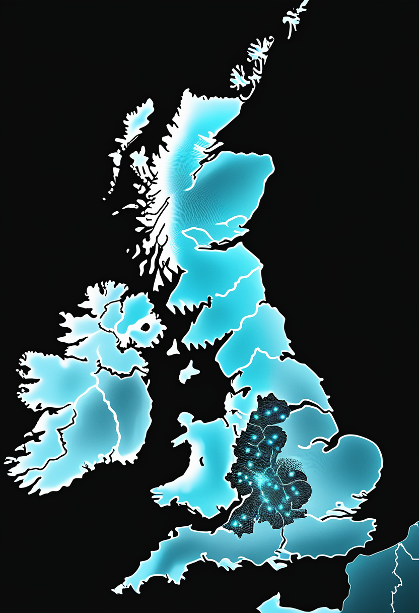
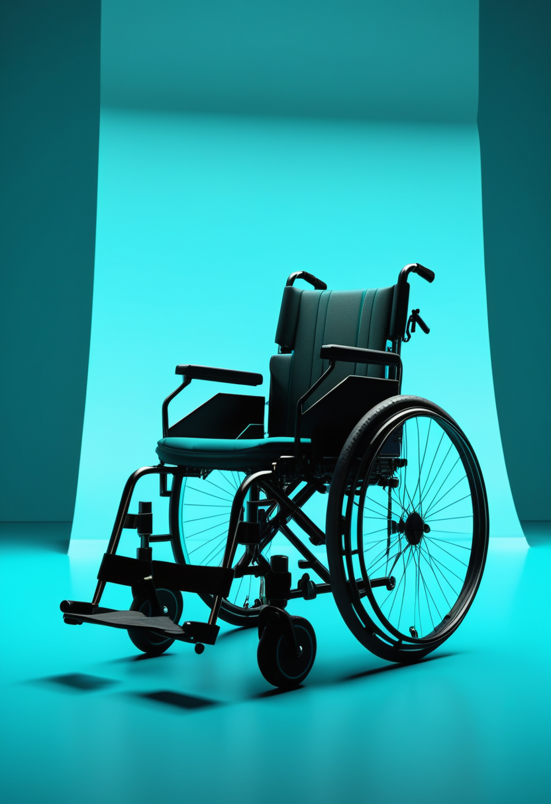
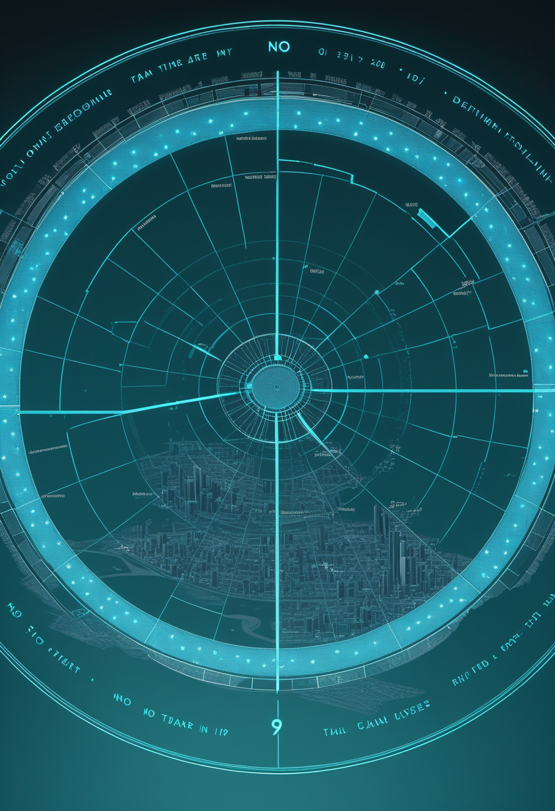
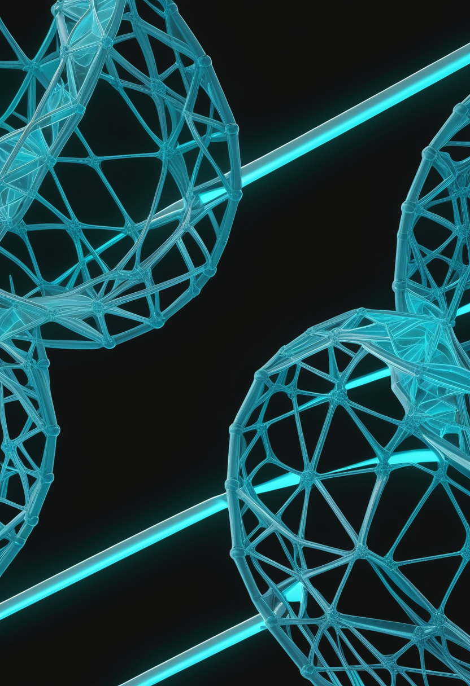
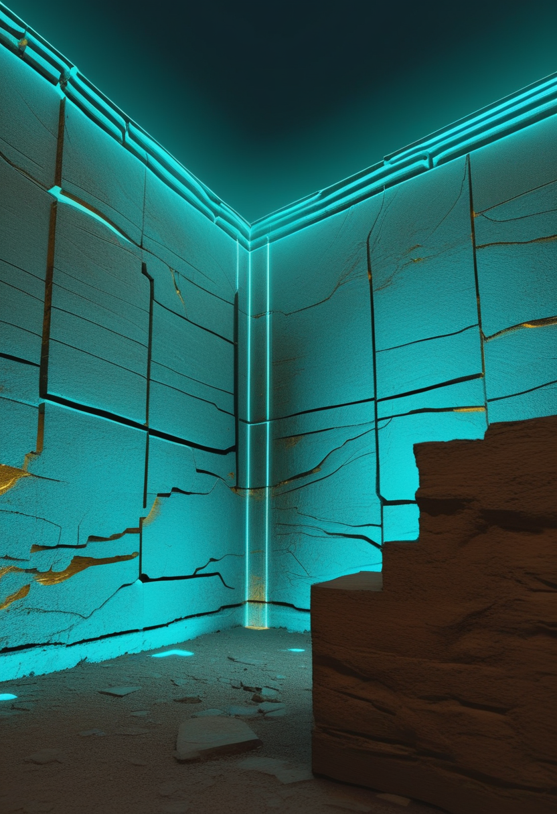

ブンディブギョ型ウイルス専用の候補ワクチン2種がコンゴ民主共和国の試験に加わる。中国では脳波で操る車いすが展示され、英国ではSMA新生児検査の実像が整理された。
WHOは11月4日、専門家グループの勧告を受け、コンゴ民主共和国(DRC)で進む「Tumaini」試験に新しい候補ワクチン2種を加えると発表した。英オックスフォード大学(インド血清研究所と協力)のChAdOx1と、米モデルナのmRNA-1469で、いずれも今回の流行を起こしているブンディブギョ型ウイルス専用に設計された。専用ワクチンが流行中に評価されるのは今回が初めて。試験は10月23日、震源のイトゥリ州ブニアで始まり、感染者の接触者に接種する「リング接種」方式を採る(10/24号・10/27号既報)。今後DRC当局の承認を経て加わる予定で、有効性の結果は2027年初めの見込み。治療薬の試験(抗体MBP134・レムデシビル・併用)は7月に始まり、数か月以内に最初の結果が出る見込み。ECDCによると11月2日時点で確定10,532例、66保健区域に広がる。

前号(11/5号)で「開始時期は資料に差がある」とした英国イングランドの新生児SMAスクリーニングは、2026年10月に、必要な機器をもつ7つの検査機関で「評価のための導入」として始まり、残りの機関は2027年10月までに加わる計画と整理できる。当面カバーされるのはイングランドの新生児の約72%にとどまる。北アイルランドとウェールズは未導入のままで、患者団体は「住む場所で差が出る」と改善を求めている。次の節目は11/10のScholar Rock決算(アピテグロマブ系新薬Isembyldの初の売上公表)。
命の章は今号、資料が揃うSMAの新しい決算・試験発表が確認できず1本に絞った(水増しはしない)。次の山場は11/10のScholar Rock決算。

上海で開かれている第9回中国国際輸入博覧会(進博会)で11月4日、頭に脳波計を着けた利用者が「前へ」と念じると車いすが動き出し、障害物は自動で避け、前に人が出ると止まるデモが披露された。脳波で大まかな意図を伝え、細かな操作は自動運転が受け持つ「共有制御」と呼ばれる方式。開発チームはいろいろな電動車いすに取り付けられるようにし、価格を5万元以内に抑えたいとしている。まだ製品化には課題が多い段階だが、視線入力が難しくなった人の移動手段の選択肢としても注目される。
中国で『脳機接口(BCI)技術標準と産業応用参考規範(1.0)』が公開されたと11月4日に報じられた。製品開発・投資・応用・研究の4分野の専門家がまとめたもので、業界の共通認識づくりの一歩とされる(発行主体や条文の詳細は報道からは確認できず)。これとは別に、中国が主導して作ったBCIの国際標準(ISO/IEC)は10/24号で既報のとおり正式発行済みで、新華網が10/29に改めて伝えている。11月19日には北京で「2026脳機接口大会」が開かれる予定(10/23号・11/5号既報、BCI企業の上場競争も背景)。
中国では展示・資金・標準の3つが同時に動いている。脳波による入力は視線入力の『代わり』でなく『組み合わせ』で使う流れ。Neuralinkなど米国勢の新しい公式発表は今号では確認できなかった。
WHOの候補ワクチン優先順位づけの専門家グループ(TAG-CVP)は、前臨床と初期の臨床データをもとに、ChAdOx1(オックスフォード大学・インド血清研究所)とmRNA-1469(モデルナ)の2種を試験「Tumaini」で評価するよう勧告した(WHO、11/4発表)。試験はDRCの国立生物医学研究所(INRB)が主導し、まず既存のワクチンErvebo(ザイール型用)がブンディブギョ型にも効くかを調べている(10/24号既報)。新しい2種はDRC当局の承認後に加わる。数字は機関で差があり、ECDCは11/2時点で確定10,532例、報道では死者5,300人超とされる。
ナイジェリア疾病対策センター(NCDC)は、北東部(報道ではアダマワ州)で見つかったエボラの疑い例2人について、2回の検査で陰性だったと発表した。同国の確定例は、10/20に首都アブジャで確認された1例のみのまま。報道によると、この患者はウガンダに滞在していたスイス人女性で、夫とともにスイスへ搬送された。前号で懸念された「国内での感染拡大」は、現時点で確認されていない。

ワシントン州ヤキマ郡では、鳥インフルエンザ(H5N1)で住民が亡くなったのに続き(11/4号既報)、郡内の人への感染は3例となった(3例目は入院せず)。州農務省によると10/29時点で郡内の乳牛33群が陽性。人から人への感染は確認されておらず、一般の人へのリスクは低いとされる。麻疹は全米4,852例(CDC、10/29時点、既報の集計から変化なし)で、汎米保健機構(PAHO)の委員会が11/10〜13に、米国とメキシコの「麻疹排除」の地位を見直す予定(11/2号で伝えた「11月中旬」の具体日程)。
エボラは『数を数える』段階から『専用の武器を試す』段階に入った。ただし結果は2027年初めで、当面は接触者追跡と隔離が頼り。米国は来週のPAHOの判断が焦点。

中国科学技術大学の周少華教授・熊鵬特任研究員らのチームが、RNAの配列から構造や働きを予測するAIの基盤モデル「structRFM」をNature誌に発表した(11/5)。2,100万組のRNA配列と構造の組み合わせで学習し、RNAの二次構造の予測で新しい基準を示した。三次構造に広げた版(Zfold)は、国際的な評価(CASP15・CASP16など)でAlphaFold3と同程度とされる。データ・モデルの重み・コードはすべて公開されており、RNA薬の開発などへの活用が期待される。
フランスの量子コンピューター企業Alice & Bobは、「猫状態」を使う超伝導量子ビットで、0と1が入れ替わる誤り(ビット反転)が平均3時間以上起きなかったと発表した。複数の量子ビットを載せたチップHelium 2で、3つの量子ビットがそれぞれ189分・252分・189分。2025年に1量子ビットで示した約44分を大きく上回る。誤り訂正に必要な量子ビットの数を減らせる可能性がある。ただし会社の発表で査読前であり、計算(2量子ビットゲート)中も同じ性能が保てるかは未確認。
中国の大学の成果がNature誌に載り、データまで公開する流れが続く。量子では『誤りを減らす』方向の着実な前進が続いた。
Anthropicは10月に改定した利用規約で、AIモデルへの「持続的で不必要な虐待や残酷な行為」を禁じる項目を加え、11月12日に発効する。通常のいら立ちや反論、暗いテーマの創作、モデルの試験・研究は対象外で、主な対応はAI側が会話を終えること(アカウント停止ではない)と報じられている。AIに意識があると認めたわけではなく、「わからないなら低いコストで備える」という考え方。MicrosoftのスレイマンAI部門CEOはこうした『モデルの福祉』の考え方を批判しており(11/3号・11/5号既報)、両社の立場の違いがはっきりしてきた。

考古学チームが衛星レーダー画像と電気探査(比抵抗トモグラフィー)を使い、ナイル川デルタの古代都市ブト(テル・エル・ファライーン)の地下に未記録の構造物を見つけた(11月1日発表)。発掘調査により、サイス王朝(第26王朝)期、約2,600年前の泥レンガの建物で、祭壇とエジプトの神々をかたどったお守りが出土したことが確認された。地中探査技術と発掘を組み合わせ、埋もれた都市の姿を掘り当てた例として注目される。
タミル・ナードゥ州考古局の調査で、南インド・ナーガパッティナムの発掘地から、ヒンドゥー教の神ナタラージャとシヴァカーミをかたどった12世紀チョーラ朝期のブロンズ像2体が出土した(10月30日)。像は台座とともに地下約1メートルから見つかった。チョーラ朝は精巧な青銅彫刻で知られ、今回の発見は当時の寺院文化の広がりを示す新たな物証となる。
『AIの心』は企業の規約、『人の歴史』は地中からの発掘と、今号は対照的な2つの軸で進んだ。NEJM・Lancetの新しい大型試験は今号では確認できなかった。
今号はエボラ対策が『数える』段階から『専用の武器を試す』段階へ進んだ一方、イングランドのSMA検査やナイジェリアの疑い例のように、前号の記載を整理・訂正する作業も重ねた一日だった。中国では脳波で動く車いすと量子ビットの安定化という、異なる領域の前進が並んだ。
では、おやすみなさい。また明日の朝刊で。